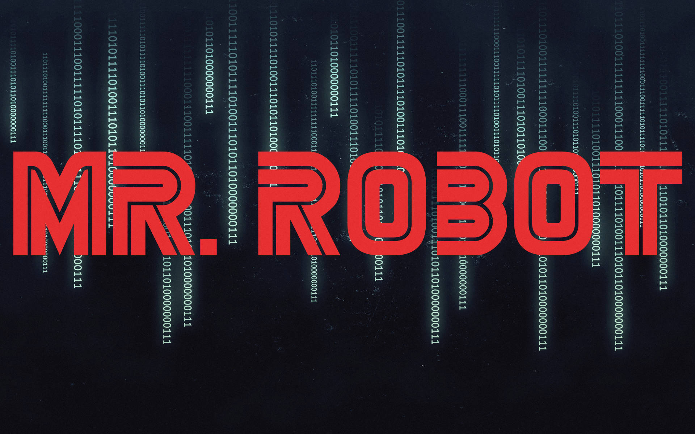

Mr. Robot (2015)
Resenha
Mr. Robot é uma série de suspense psicológico e drama criada por Sam Esmail, lançada em 2015, que rapidamente se tornou um fenômeno cult. Estrelada por Rami Malek no papel de Elliot Alderson, a trama mergulha no mundo da cibersegurança, da conspiração e da luta contra o sistema, oferecendo uma narrativa intensa e cheia de reviravoltas.
Elliot é um jovem programador genial, mas socialmente isolado, que trabalha como engenheiro de segurança cibernética de dia e, à noite, atua como hacker vigilante. Sofrendo de distúrbios mentais, como ansiedade e depressão, ele começa a questionar o que é real e o que é ilusão, especialmente após conhecer Mr. Robot (Christian Slater), um misterioso ativista que o convida a derrubar uma megacorporação que domina o mundo financeiro.
A série se destaca por seu estilo visual único, trilha sonora marcante e narrativa não linear, que brinca com a mente do espectador. É densa, provocativa e exige atenção constante, explorando temas como vigilância, controle social, identidade e a fragilidade da mente humana.
Nota
⭐ 8.8 / 10